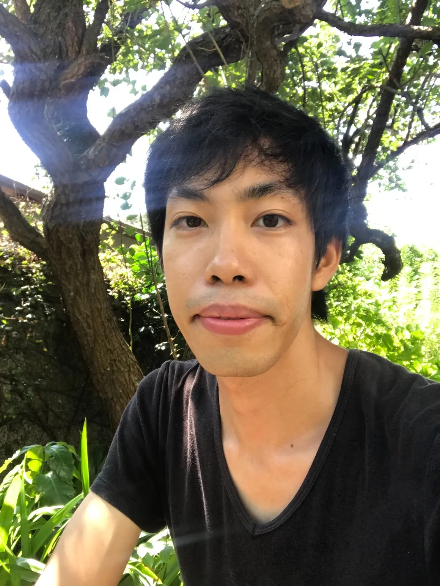
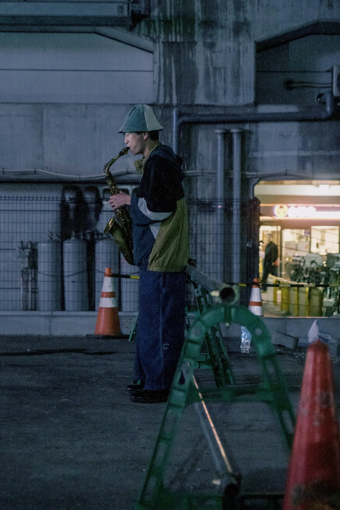
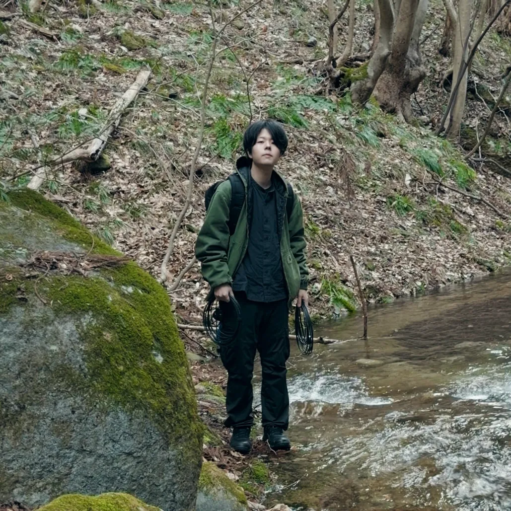

作曲家・ドラマー
石川県出身。
自身の演奏による即興表現、作編曲活動を行う。2018年度・武生国際音楽祭作曲奨学生。
様々なアーティストと交流する中で、音が持つ可能性を探求している。
2026.04.04 (Sat) / Koenji Fourth Floor II

作曲家・ドラマー
石川県出身。
自身の演奏による即興表現、作編曲活動を行う。2018年度・武生国際音楽祭作曲奨学生。
様々なアーティストと交流する中で、音が持つ可能性を探求している。

サックス奏者として、数多くの舞台に立つ。「今を音にする」ための即興演奏を軸に活動している。
作曲家、CM音楽プロデューサーの顔も持ち、様々な媒体に幅を広げる。公演企画では、「unison」、「机の上のりんご」など。

福島県出身。
コンピュータを用いた即興演奏やパフォーマンス、音響作品、サウンドインスタレーションを中心に活動。
無機的な手法と有機的な感覚のあわいのなかで、音の引力や気配を探っている。
熊本県出身。
自身のベースに異なる踊りや質感を取り込みながら、ジャンルの枠を越えた新たな「在り方」を模索する。
都内および地方にて、自主企画・単独公演・MV出演など多岐に渡る活動を展開。
ダンサー・川村美紀子とのユニット《異路派 -iroha-》では、路上を舞台に活動を行う。
自身にしかできない視覚表現の新たな地平を切り開くことを目指す。その踊りは、言葉ではなく、身体の沈黙と時間の深さによって語られると考える。